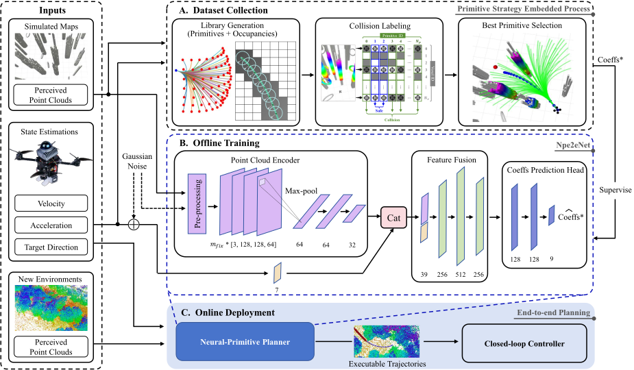

Autonomous flight in unknown cluttered environments is hindered by the computation-quality-memory trilemma of onboard trajectory generation. In this paper, we propose an efficient end-to-end local planner via imitation learning. A lightweight offline-primitive-based dataset collection framework is designed to produce safe and high-quality trajectory primitives in non-convex environments. A compact neural network directly maps sensory inputs to polynomial coefficients that inherently encode higher-order dynamical information. The learned policy generates smooth, empirically collision-free and dynamically feasible trajectories in real time without back-end solving. It achieves ultra-fast computation (below 1ms on a standard desktop and average 3.68ms during onboard flight), while maintaining low onboard memory requirements (less than 1.5MiB). Extensive simulation benchmarks demonstrate superiority in both planning latency and target-reaching progress quality. Zero-shot deployment in real-world experiments further validates the robust sim-to-real transfer capability of the proposed method.
The end-to-end planner generates smooth, empirically collision-free and dynamically feasible trajectories directly from onboard sensory inputs. (A) Training datasets are collected entirely in simulation using a customized primitive strategy. (B) A neural network learns to predict polynomial coefficients that inherently encode high-order dynamical information for direct execution by the low-level controller. (C) The learned policy is zero-shot deployed for fast online inference in previously unseen environments without fine-tuning.
